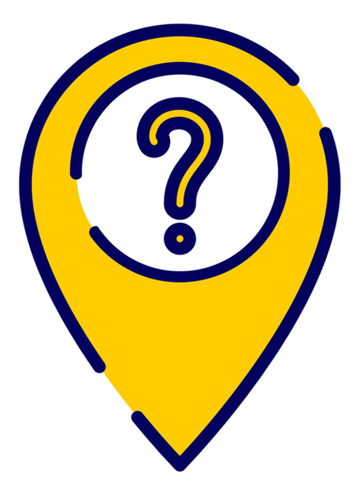

<ion-content class="detail" fullscreen>
  <ion-back-button fill="solid" defaultHref="tabs"></ion-back-button>

  <app-map-buttons
    [buttonsNeeded]="false"
    [destination]="user.location"
    (myLocationClickedEvent)="myLocationClicked()"
  ></app-map-buttons>

  <app-profile-header *ngIf="friendStatus" class="friend"
      [user]="user"
      [buttonsNeeded]="true"
      [friendStatus]="friendStatus"
      (headerClickedEvent)="headerClicked()"
  ></app-profile-header>

  <app-map *ngIf="friendStatus && friendStatus.status === 'ACCEPTED'"
    [mapType]="'friend'"
  ></app-map>

  <ion-title class="noListMessage" *ngIf="friendStatus && friendStatus.status !== 'ACCEPTED'">
    You can only see friends location
  </ion-title>

  

</ion-content>